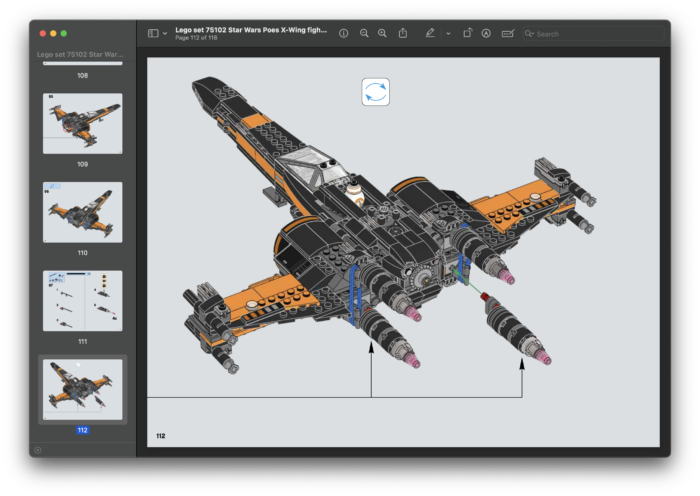
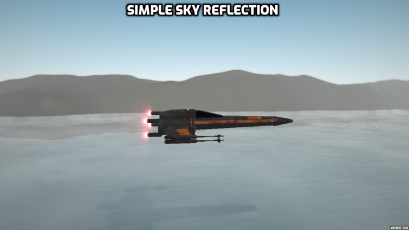
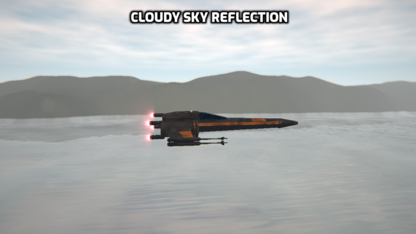

When I first watched The Force Awakens I saw the scene where a group of X-Wings flew down a river, kicking up water spray behind them. And now I’ve created a GLSL shader inspired by it!
Trying to get the correct scale modelling the X-Wing was initially quite tricky, but then I found the Lego X-Wing build instructions – MUCH better than any schematic! Counting the Lego ‘studs’ gives a very easy to follow guide on the size of each dimension!
I’m definitely going to be using this trick again in the future…

The water surface is simply a flat plane with some ‘bump’ added to the material (Just displacing the X/Z components of the normal). This in itself is quite effective, but adding the reflection of the sky (including atmosphere and clouds) really adds a level of realism.
Note: It would be just as easy to displace the water surface in the SDF function, but that would take longer for the marched ray to converge on the surface, incurring a slight FPS hit.


The mountains in the distance are modelled as a infinite cylinder with a FBM displacement applied to it. I usually model these things as a flat plane with a displacement, but that introduces many rendering artefacts that require shortening the ray marching step size to remove. Modelling as a cylinder reduces these artefacts, and helps keep the performance as high as possible.
…And of course, I couldn’t miss out BB-8!
The scene uses depth of field, fish eye lens, and chromatic aberration to add some subtle finishing details.